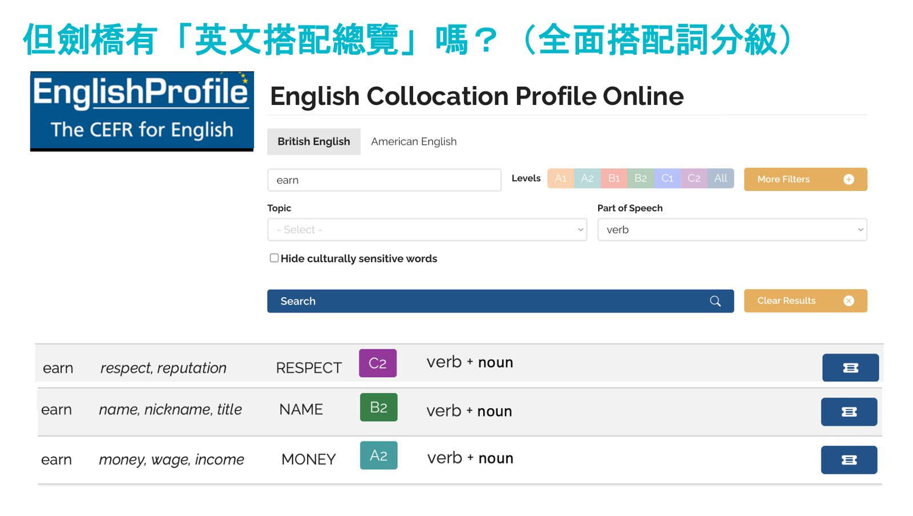
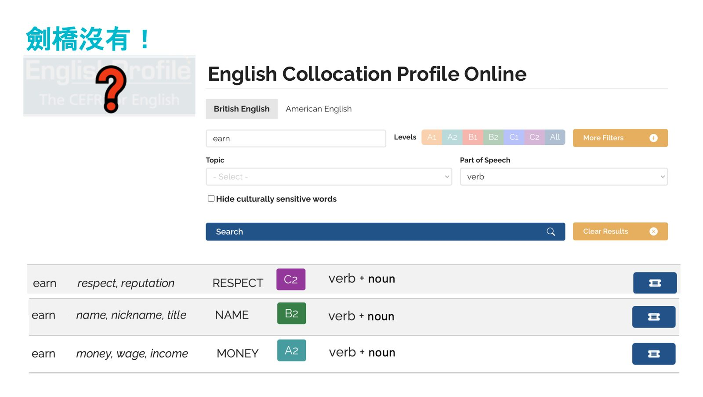
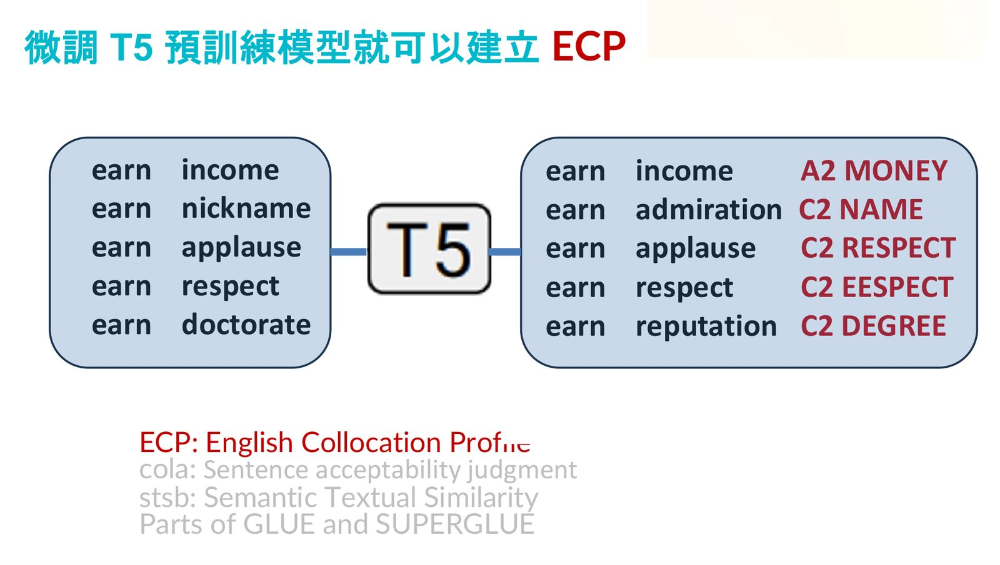
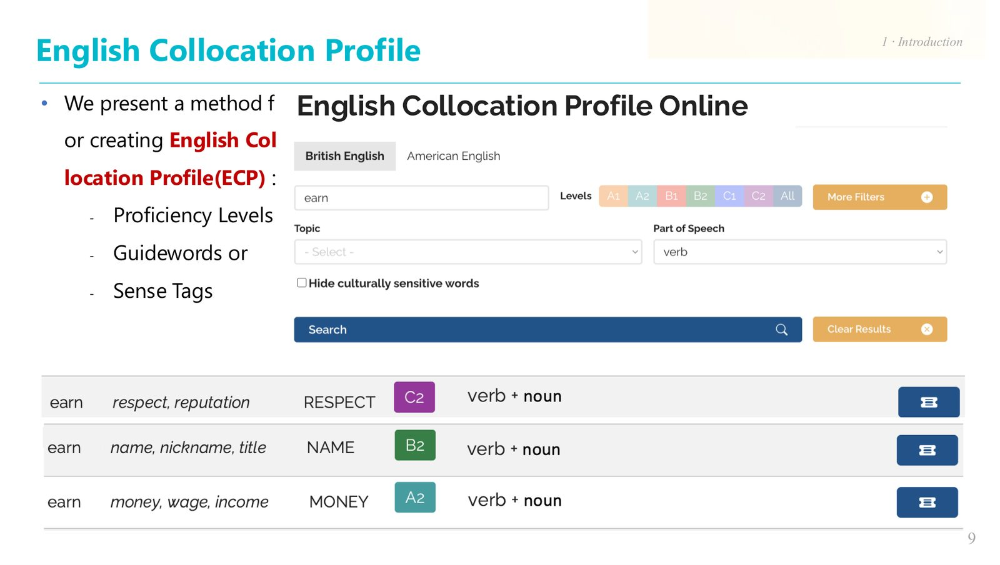

摘要
本場演講探討如何讓非資工背景的人文與語言學者（即「詩人騷客」），利用大語言模型進行「Vibe Coding」來自主開發應用軟體。清華大學資工系張俊盛教授從網路語料庫與搭配詞（Collocation）研究30多年的世界性接力談起，梳理了從 WWW 誕生、Google Web1T5 語料庫、Linggle 工具，到 Transformer 與 BERT 等技術對生成式 AI 的奠基過程。隨後示範以經典的「Unix for Poets」教材，利用 Unix 命令行（tr、sort、uniq 等）進行詞頻分析。最後，講者展示了實戰案例：透過結構化 Prompt 指引 ChatGPT 與 Gemini Canvas 產生 English Collocation Profile（ECP）的 Python Streamlit 程式碼與 HTML Demo，並介接 Gemini API 打造詞彙索引典（Concordancer）。演講的核心價值在於證明在 AI 時代下，程式開發門檻已被大幅降低，非工程背景者也能藉由 Prompt 驅動敏捷軟體交付。
重點整理
- 回顧網路語料庫與搭配詞研究的發展脈絡：1989年WWW誕生、2006年Google釋出Web1T5、2010年NetSpeak、2013年清大團隊開發的Linggle
- 說明生成式AI背後的技術基石：Wikipedia、Common Crawl、Word2Vec、Transformer、BERT、T5等，皆源自眾多研究者與機構的公益貢獻
- 示範以Ken Church的Unix for Poets教材，透過tr、sort、uniq等Unix指令pipe計算文件的unigram與bigram詞頻
- 透過對ChatGPT或Gemini/Canvas下達結構化Prompt，非資工背景者也能產出一個可查詢English Collocation Profile（依CEFR等級與語意標籤搜尋搭配詞）的Streamlit或HTML應用程式
- 另以Gemini API示範打造詞彙索引典（concordancer）demo，可針對指定單字產生7則例句，呈現典型的搭配詞與文法用法
重點圖片／架構圖




講者背景與演講主題
講者張俊盛為國立清華大學資訊工程學系教授，本場演講主題為「非理工人的Vibe Coding」，內容分為五大部分：網路語料庫與搭配詞研究簡介、Unix for Poets搭配詞抽取實例、Vibe Coding for Poets實作示範、English Collocation Profile展示，以及總結。
網路語料庫與搭配詞研究的歷史脈絡
講者梳理了從1989年Tim Berners-Lee在CERN催生全球互聯網、2006年Google釋出Web1T5語料庫、2010年澳洲學者以Web1T5結合Greenstone開發搭配詞工具、德國NetSpeak，到2013年清華大學團隊開發的Linggle，展現搭配詞研究的世界性接力。緊接著回顧生成式AI背後的重要基石：2001年Wikipedia成為訓練資料主體、2007年Common Crawl提供網路下載資料、2013年Word2Vec將文字向量化、2017年Transformer提出最佳的類神經網路架構、2018年BERT的遮罩語言模型，以及2019年T5的大語言模型加提示典範，這些技術共同構成English Collocation Profile（ECP）的開發基礎。
Unix for Poets：人文學者的文字操弄工具
講者引用Ken Church發表的教材「Unix for Poets」（史丹佛大學CS124課程講義），示範如何用tr（文字斷詞）、sort（排序）與uniq -c（去重複並計數）等Unix指令組成的pipeline，計算文件中每個單字出現的次數（unigram），並進一步延伸計算相鄰兩字的Bigram出現次數。講者也提到僅用Unix指令即可復刻一篇博士論文層級的分析程式，說明命令列工具的威力。
Vibe Coding實作案例：ECP展示介面與詞彙索引典
第一個案例是「Exercise 1: Count words」的延伸，講者示範以Gemini/Canvas開發詞頻分析應用程式；接著展示如何準備ECP_demo目錄與ECP_data.csv資料，安裝Python與Streamlit套件後，透過結構化Sample Prompt要求ChatGPT撰寫一個Streamlit App，功能包含標題顯示、搭配詞搜尋框、CEFR等級與語意標籤篩選，並在使用者搜尋詞根後顯示比對結果表格；若覺得Python/Streamlit門檻較高，也可改用Gemini/Canvas產生純HTML版本的Demo。第二個案例則是詞彙索引典（concordancer）：透過Prompt要求打造一個名為「My Concordance」的App，接入Gemini API並針對指定單字（預設為defy）產生7則具代表性的例句，呈現該詞的典型搭配詞與文法模式。
結論
演講以English Collocation Profile的完整展示（涵蓋A1至C2全等級與C2專屬等級的搭配詞介面）收尾，總結透過Vibe Coding方式，即使是不具備程式設計背景的人文學者（詩人騷客），也能運用ChatGPT或Gemini等生成式AI工具，將長年累積的語言學研究方法（如Web1T5搭配詞分級）轉化為可實際使用的應用軟體。